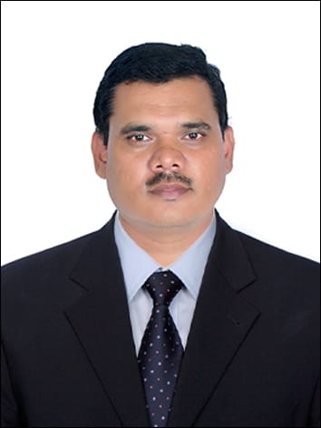

Prof. Nitin Zinzurke
Assistant Professor, JSPM's JSCOE, Hadapsar
Email: ni3zinzurke@gmail.com
Phone: +91-988165758
🎓 Educational Qualifications
| Exam | Board / University | Institution | % Acquired | Class | Year of Passing |
|---|---|---|---|---|---|
| Ph.D. (Pursuing) | Vel Tech University | CSE Dept., Avadi, Chennai | Appeared | Appeared | Appeared |
| M.E. | SPPU | K. J. College of Engg. & Research, Pisoli, Pune | 8.4 (Percentile) | Distinction | Nov 2017 |
| B.E. | University of Pune | P.D.E.A's College of Engg., Hadapsar, Pune | 69.20% | Distinction | Aug 2006 |
| HSC | Pune Board | Vidhya Pratishthan College, Baramati | 72.17% | First Class | May 2002 |
| SSC | Pune Board | Sant Tukadoji Maharaj Vidhyalaya, Daund | 79.20% | Distinction | June 2000 |
🏢 Work Experience
- JSPM JSCOE :- Assistant Professor
- YTC, Faculty of Engg. :- Assistant Professor
- Satara Polytechnic :- Lecturer
💻 Computer Proficiency
- Programming Languages: C, C++, Core Java, C#
- Web Technologies: HTML, DHTML, JSP, Servlet, ASP.NET
- Database Management: SQL, PL/SQL
- Software/Platforms: VB 6.0, VB.NET, .NET Framework
- Operating Systems: Windows, Linux
🎯 Hobbies & Interests
- Visiting historical places
- Cycling
- Reading newspapers & books
- Playing Volleyball
📘 Teaching Experience Summary
Prof. Zinzurke brings over 16 years of teaching experience across diploma and degree programs. He has taught key subjects like DS&BDA, OOMD, IP, CN, and CC. His teaching blends conceptual clarity with real-world applications, ensuring holistic development of students.